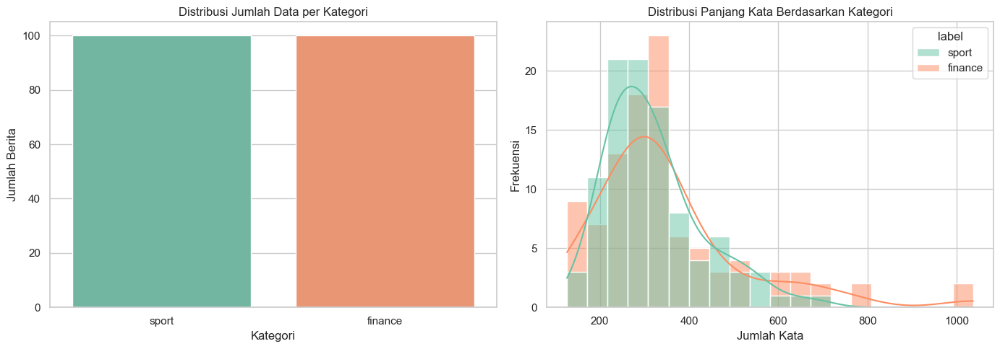
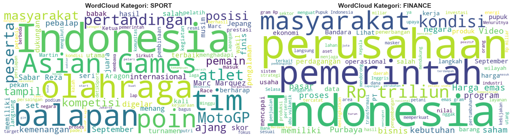
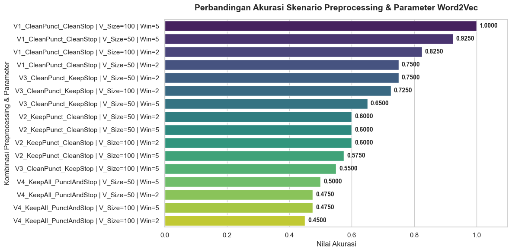
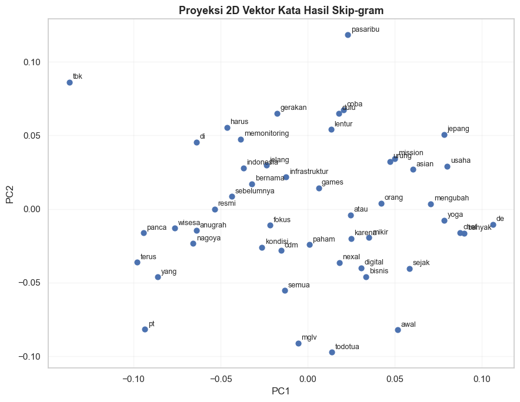

Word Embedding: Skip-gram#
Notebook ini membangun representasi vektor kata (word embedding) menggunakan arsitektur Skip-gram (bagian dari algoritma Word2Vec), dilatih menggunakan library gensim.
Ide dasar Skip-gram: diberikan sebuah kata (target), model dilatih memakai jaringan saraf tiruan berlapis tunggal (shallow neural network) untuk memprediksi kata-kata di sekitarnya (context) dalam sebuah jendela (window). Setelah dilatih, bobot pada lapisan tersembunyi model tersebut menjadi representasi vektor (embedding) untuk tiap kata - inilah yang dikembalikan gensim sebagai model.wv.
Alur:
3 kalimat dari dataset
|
Tokenisasi -> daftar kalimat (list of tokens)
|
Ilustrasi pasangan (target, context) - agar konsep Skip-gram terlihat jelas
|
Latih model Word2Vec (sg=1) menggunakan gensim
|
Ambil vektor kata (word embedding) dari model
|
Uji kemiripan antar kata & visualisasi
import pandas as pd
import numpy as np
import re
import matplotlib.pyplot as plt
from gensim.models import Word2Vec
1. Ambil 3 Kalimat dari Dataset#
Kita ambil 3 kalimat asli dari artikel dataset (2 dari kategori sport, 1 dari finance), lalu dibersihkan ringan (case folding + hapus tanda baca) agar mudah ditokenisasi.
df = pd.read_excel("../data/dataset_berita_200.xlsx")
def pecah_kalimat(teks):
return [k.strip() for k in re.split(r"(?<=[.!?])\s+", teks) if len(k.strip().split()) >= 5]
# Ambil 1 kalimat yang cukup panjang dari 3 artikel berbeda: 2 sport, 1 finance
sumber = [
(1, "sport"),
(50, "sport"),
(101, "finance"),
]
kalimat_terpilih = []
for doc_id, label in sumber:
teks_artikel = df[df["id"] == doc_id]["isi_berita"].iloc[0]
kalimat_pertama = pecah_kalimat(teks_artikel)[0]
kalimat_terpilih.append({"id": doc_id, "label": label, "kalimat": kalimat_pertama})
for k in kalimat_terpilih:
print("[id={}, {}] {}".format(k["id"], k["label"], k["kalimat"]))
# Tentukan ukuran window
window_size = 2
vector_size = 6 # Ukuran vektor embedding
[id=1, sport] Chef de Mission (CdM) Indonesia Todotua Pasaribu terus memonitoring kondisi di Nagoya, Jepang jelang Asian Games 2026.
[id=50, sport] Banyak orang urung coba yoga karena mikir harus lentur dulu atau paham semua gerakan sejak awal.
[id=101, finance] PT NexAl Digital Infrastruktur Tbk (MGLV) yang sebelumnya bernama PT Panca Anugrah Wisesa Tbk, resmi mengubah fokus bisnis usaha.
Pembersihan Ringan & Tokenisasi#
def bersihkan_ringan(teks):
teks = teks.lower()
teks = re.sub(r"[^a-z\s]", " ", teks)
teks = re.sub(r"\s+", " ", teks).strip()
return teks
daftar_kalimat_token = [bersihkan_ringan(k["kalimat"]).split() for k in kalimat_terpilih]
print("Corpus (list of tokens per kalimat) - format input yang dibutuhkan gensim:\n")
for tokens in daftar_kalimat_token:
print(tokens)
Corpus (list of tokens per kalimat) - format input yang dibutuhkan gensim:
['chef', 'de', 'mission', 'cdm', 'indonesia', 'todotua', 'pasaribu', 'terus', 'memonitoring', 'kondisi', 'di', 'nagoya', 'jepang', 'jelang', 'asian', 'games']
['banyak', 'orang', 'urung', 'coba', 'yoga', 'karena', 'mikir', 'harus', 'lentur', 'dulu', 'atau', 'paham', 'semua', 'gerakan', 'sejak', 'awal']
['pt', 'nexal', 'digital', 'infrastruktur', 'tbk', 'mglv', 'yang', 'sebelumnya', 'bernama', 'pt', 'panca', 'anugrah', 'wisesa', 'tbk', 'resmi', 'mengubah', 'fokus', 'bisnis', 'usaha']
vocab = sorted(set(kata for kalimat in daftar_kalimat_token for kata in kalimat))
print(f"Ukuran vocabulary: {len(vocab)} kata")
print(vocab)
Ukuran vocabulary: 49 kata
['anugrah', 'asian', 'atau', 'awal', 'banyak', 'bernama', 'bisnis', 'cdm', 'chef', 'coba', 'de', 'di', 'digital', 'dulu', 'fokus', 'games', 'gerakan', 'harus', 'indonesia', 'infrastruktur', 'jelang', 'jepang', 'karena', 'kondisi', 'lentur', 'memonitoring', 'mengubah', 'mglv', 'mikir', 'mission', 'nagoya', 'nexal', 'orang', 'paham', 'panca', 'pasaribu', 'pt', 'resmi', 'sebelumnya', 'sejak', 'semua', 'tbk', 'terus', 'todotua', 'urung', 'usaha', 'wisesa', 'yang', 'yoga']
2. Ilustrasi Pasangan (Target, Context)#
Sebelum melatih model, mari kita lihat dulu contoh konkret pasangan target-context yang menjadi dasar cara kerja Skip-gram (ilustrasi ini tidak dipakai langsung untuk training - gensim membuat dan memproses pasangan seperti ini secara internal).
def buat_pasangan_skipgram(tokens, window=2):
pasangan = []
for i, target in enumerate(tokens):
mulai = max(0, i - window)
akhir = min(len(tokens), i + window + 1)
for j in range(mulai, akhir):
if j != i:
pasangan.append((target, tokens[j]))
return pasangan
WINDOW = 2
semua_pasangan = []
for tokens in daftar_kalimat_token:
semua_pasangan += buat_pasangan_skipgram(tokens, window=WINDOW)
print(f"Total pasangan (target, context) dengan window={WINDOW}: {len(semua_pasangan)}")
print("\nContoh 20 pasangan pertama:")
for t, c in semua_pasangan[:20]:
print(f" target='{t:12}' -> context='{c}'")
Total pasangan (target, context) dengan window=2: 186
Contoh 20 pasangan pertama:
target='chef ' -> context='de'
target='chef ' -> context='mission'
target='de ' -> context='chef'
target='de ' -> context='mission'
target='de ' -> context='cdm'
target='mission ' -> context='chef'
target='mission ' -> context='de'
target='mission ' -> context='cdm'
target='mission ' -> context='indonesia'
target='cdm ' -> context='de'
target='cdm ' -> context='mission'
target='cdm ' -> context='indonesia'
target='cdm ' -> context='todotua'
target='indonesia ' -> context='mission'
target='indonesia ' -> context='cdm'
target='indonesia ' -> context='todotua'
target='indonesia ' -> context='pasaribu'
target='todotua ' -> context='cdm'
target='todotua ' -> context='indonesia'
target='todotua ' -> context='pasaribu'
INPUT model = kata target, OUTPUT yang ingin diprediksi = kata context di sekitarnya. Semakin sering dua kata muncul berdekatan di seluruh korpus, semakin besar peluang model belajar bahwa keduanya berkaitan, sehingga vektor keduanya didorong menjadi lebih mirip.
3. Melatih Model Word2Vec (Skip-gram)#
Parameter penting:
sg=1-> menggunakan mode Skip-gram (jikasg=0, modelnya menjadi CBOW - kebalikan dari Skip-gram)vector_size-> dimensi vektor kata yang dihasilkanwindow-> ukuran jendela context, sama seperti ilustrasi di atasmin_count=1-> kata yang muncul minimal 1 kali tetap dimasukkan (perlu diatur rendah karena korpus kita sangat kecil, hanya 3 kalimat)epochs-> jumlah putaran training
from gensim.models import Word2Vec
model = Word2Vec(
sentences=daftar_kalimat_token,
vector_size=20,
window=WINDOW,
min_count=1,
sg=1, # 1 = Skip-gram, 0 = CBOW
epochs=200,
seed=42,
)
print("Model berhasil dilatih.")
print("Ukuran vocabulary dalam model:", len(model.wv.index_to_key))
print("Dimensi tiap vektor kata:", model.wv.vector_size)
Model berhasil dilatih.
Ukuran vocabulary dalam model: 49
Dimensi tiap vektor kata: 20
Contoh Vektor untuk Salah Satu Kata#
kata_contoh = vocab[0]
print(f"Vektor kata '{kata_contoh}' (20 dimensi):")
print(np.round(model.wv[kata_contoh], 3))
Vektor kata 'anugrah' (20 dimensi):
[ 0.055 0.049 -0.033 0.01 0.037 0.048 -0.086 -0.064 0.001 -0.112
0.038 -0.018 0.015 0.019 0.11 0.027 0.038 -0.165 -0.001 0.03 ]
4. Kata Paling Mirip (Berdasarkan Model yang Dilatih)#
kata_uji = vocab[0]
top_n = min(5, len(vocab) - 1)
print(f"Kata paling mirip dengan '{kata_uji}':")
for kata, skor in model.wv.most_similar(kata_uji, topn=top_n):
print(f" {kata:12} (cosine similarity: {skor:.3f})")
Kata paling mirip dengan 'anugrah':
kondisi (cosine similarity: 0.888)
tbk (cosine similarity: 0.875)
panca (cosine similarity: 0.872)
wisesa (cosine similarity: 0.854)
nagoya (cosine similarity: 0.833)
Catatan tentang Ukuran Korpus
Korpus yang digunakan di sini hanya terdiri dari 3 kalimat pendek, jauh lebih kecil dibanding korpus asli Word2Vec yang biasanya dilatih pada jutaan kalimat. Akibatnya, kemiripan antar kata yang dihasilkan di sini murni mencerminkan pola kata-kata yang kebetulan muncul berdekatan dalam 3 kalimat tersebut, bukan makna semantik yang sesungguhnya. Notebook ini disusun untuk mendemonstrasikan cara kerja Skip-gram secara konkret, bukan untuk menghasilkan embedding yang siap dipakai secara praktis.
Implementasi pada data berita#
Tujuan Analisis pada Dataset Berita
Pada bagian ini, data berita digunakan sebagai contoh data nyata untuk menguji apakah model Word2Vec Skip-gram dapat menghasilkan representasi kata yang berguna untuk klasifikasi kategori berita.
Proses yang dilakukan meliputi:
memahami struktur dan distribusi data,
memeriksa panjang teks dan kategori,
melihat kata-kata dominan melalui wordcloud,
membersihkan teks dengan berbagai skenario preprocessing,
melatih model Word2Vec dan membangun vektor dokumen,
mengevaluasi hasil menggunakan Naive Bayes.
Dengan pendekatan ini, kita dapat membandingkan bagaimana variasi preprocessing dan parameter model memengaruhi kualitas representasi teks.
1. Understanding data#
Tahap ini penting untuk memastikan dataset yang akan diproses benar-benar sesuai dengan kebutuhan analisis. Kita mengecek:
jumlah baris dan kolom,
tipe data masing-masing kolom,
keberadaan nilai kosong,
sampel teks berita yang akan diproses,
distribusi kategori dan panjang teks.
Jika struktur data tidak sesuai, model yang dibangun dapat menghasilkan hasil yang tidak akurat atau sulit diinterpretasi. Oleh karena itu, pemahaman awal data menjadi dasar sebelum preprocessing dan modeling.
# Load dataset
df = pd.read_excel("../data/dataset_berita_200.xlsx")
# Menampilkan 5 baris pertama data untuk memastikan data berhasil dibaca
print(f"Total baris dan kolom pada dataset: {df.shape}")
display(df.head(5))
display(df.tail(5))
Total baris dan kolom pada dataset: (200, 4)
| id | isi_berita | label | url | |
|---|---|---|---|---|
| 0 | 1 | Chef de Mission (CdM) Indonesia Todotua Pasari... | sport | https://sport.detik.com/sport-lain/d-8655308/c... |
| 1 | 2 | Banjir besar melanda Nagoya, Jepang, menjelang... | sport | https://sport.detik.com/sport-lain/d-8655303/a... |
| 2 | 3 | Ketua Umum Komite Olimpiade Indonesia (KOI) Ra... | sport | https://sport.detik.com/sport-lain/d-8655067/k... |
| 3 | 4 | Persaingan titel juara dunia semakin ketat men... | sport | https://sport.detik.com/moto-gp/d-8654776/moto... |
| 4 | 5 | Sektor ganda campuran kembali mengalami peromb... | sport | https://sport.detik.com/raket/d-8654666/ganda-... |
| id | isi_berita | label | url | |
|---|---|---|---|---|
| 195 | 196 | Market Overview\nIndeks Harga Saham Gabungan (... | finance | https://finance.detik.com/bursa-dan-valas/d-86... |
| 196 | 197 | PT TBS Energi Utama Tbk (TOBA) menjadi perusah... | finance | https://finance.detik.com/bursa-dan-valas/d-86... |
| 197 | 198 | Penanganan insentif terus dilakukan untuk meng... | finance | https://finance.detik.com/berita-ekonomi-bisni... |
| 198 | 199 | InJourney Airports menjamin kesiapan operasion... | finance | https://finance.detik.com/berita-ekonomi-bisni... |
| 199 | 200 | Otoritas Jasa Keuangan (OJK) mencatat total ut... | finance | https://finance.detik.com/moneter/d-8653044/pi... |
# Informasi umum mengenai struktur DataFrame
print("=== INFO DATASET ===")
df.info()
print("\n=== CEK MISSING VALUE ===")
print(df.isnull().sum())
print("\n=== CONTOH DATA MENTAH (RAW TEXT) ===")
column_name = 'isi_berita' if 'isi_berita' in df.columns else df.columns[0]
for i, text_sample in enumerate(df[column_name].head(3), 1):
print(f"{i}. {text_sample}\n")
# cek distribusinya
if 'label' in df.columns or 'category' in df.columns:
label_col = 'label' if 'label' in df.columns else 'category'
print(f"\n=== DISTRIBUSI KELAS ({label_col}) ===")
print(df[label_col].value_counts())
=== INFO DATASET ===
<class 'pandas.core.frame.DataFrame'>
RangeIndex: 200 entries, 0 to 199
Data columns (total 4 columns):
# Column Non-Null Count Dtype
--- ------ -------------- -----
0 id 200 non-null int64
1 isi_berita 200 non-null object
2 label 200 non-null object
3 url 200 non-null object
dtypes: int64(1), object(3)
memory usage: 6.4+ KB
=== CEK MISSING VALUE ===
id 0
isi_berita 0
label 0
url 0
dtype: int64
=== CONTOH DATA MENTAH (RAW TEXT) ===
1. Chef de Mission (CdM) Indonesia Todotua Pasaribu terus memonitoring kondisi di Nagoya, Jepang jelang Asian Games 2026. Itu setelah adanya banjir besar yang menimpa kota tersebut.
Hal tersebut ditekankan Todo, sapaan karibnya, karena berkaitan dengan kontingen Indonesia yang akan tampil di Asian Games 2026.
Mengutip laman Straitstimes, ratusan atlet Asian Games di Jepang sempat dievakuasi dari tempat penginapan mereka akibat hujan lebat yang melanda kota tuan rumah Nagoya dengan kompetisi yang akan dimulai pada 10 September.
Air hujan juga merembes ke beberapa venue pertandingan, sementara prakiraan cuaca menunjukkan akan ada lebih banyak hujan dalam beberapa hari ke depan.
Sekitar 104 mm hujan turun dalam satu jam di Nagoya pada 8 September, yang mendorong pejabat pemerintah kota untuk mengeluarkan perintah evakuasi bagi beberapa wilayah di kota tersebut.
"Kami memonitoring terus sejak tadi malam. Memang kondisi pagi ini dari pemerintah Nagoya, ofisial dari pemerintah provinsi Nagoya sudah mengeluarkan warning untuk me-lock seluruh kegiatan yang ada di Nagoya," kata Todotua saat ditemui di Wisma Serba Guna, GBK, pada Rabu (9/9/2026).
Kondisi ini, kata Todo, tak hanya berdampak pada kontingen Indonesia, tapi semua yang hadir di Nagoya.
Diketahui, Timnas basket menjadi kontingen cabor pertama dari Indonesia yang terbang ke Nagoya. Mereka bertolak pada Senin (7/9) malam dari Surabaya, kemudian ke Singapura, dan tiba di Jepang pada Selasa (8/9).
"Jadi impact-nya bukan cuma kita tapi semua yang hadir di sana. Kami dengan tim manajer di sana memikirkan untuk mencari tempat latihan darurat," tuturnya.
"Tapi secara prinsip ini keputusan pemerintah setempat provinsi Nagoya memang lock semua, tak hanya sport tapi tempat pelayanan umum, sekolah juga," kata Todo.
Ia juga menegaskan pihaknya akan terus memonitor perkembangan bersama panitia.
"Seperti Pak Menpora sampaikan ini bukan hal dibuat-buat, kita tetap memonitor kondisi yang ada," pungkas Todotua.
(mcy/aff)
2. Banjir besar melanda Nagoya, Jepang, menjelang Asian Games 2026. Kondisi tersebut menjadi perhatian Menteri Pemuda dan Olahraga (Menpora) Erick Thohir. Tapi ia yakin pemerintah Jepang sudah menyiapkan langkah antisipasi.
Asian Games 2026 akan digelar di Aichi-Nagoya pada 19 September hingga 4 Oktober mendatang. Banjir yang melanda Nagoya menyebabkan sejumlah aktivitas dan transportasi di kota tersebut terganggu. Meski demikian, kondisi venue Asian Games dilaporkan tetap aman dan penyelenggaraan masih berjalan sesuai rencana.
Erick mengatakan pihaknya telah mendapat penjelasan mengenai rencana pemerintah Jepang untuk menghadapi situasi tersebut.
"Alhamdulillah kemarin CdM, Ketua Komite Olimpiade Indonesia (KOI), kami, diundang oleh duta besar Jepang, serta dijelaskan plan A dan plan B dari pemerintah Jepang," kata Erick saat ditemui di Wisma Serba Guna, GBK, Rabu (9/9/2026).
"Saya yakin pemerintah Jepang adalah pemerintah yang sama seperti pemerintah Indonesia yang mawas dan peduli pada rakyatnya," ujarnya.
Erick juga menilai Jepang memiliki pengalaman dalam menggelar ajang olahraga internasional besar sehingga diyakini sudah memiliki persiapan menghadapi kondisi darurat.
"Dan tentu ketika ada event sebesar ini mereka punya pengalaman. Kita dukung lah. Yang penting tadi CdM, Ketua KOI, sudah sampaikan tadi untuk fokus (karena) tinggal 10 hari lagi. Jaga makan, kesehatan, yang lain-lain serahkan kepada ahlinya," tegasnya.
Erick turut meminta masyarakat Indonesia memberikan dukungan kepada tuan rumah Asian Games 2026.
"Saya kira kita harus dukung juga tuan rumah pemerintah Jepang. Pasti mereka ada kendala, kita harus dukung. Nanti apa keputusan panitia, CdM akan melobi dan beri pandangan seperti apa solusinya," kata Erick.
Erick menegaskan kontingen Indonesia saat ini perlu tetap fokus mempersiapkan diri menghadapi Asian Games. Keputusan terkait kondisi di lapangan nantinya diserahkan kepada pihak yang berwenang. Indonesia sendiri akan ambil bagian dalam Asian Games 2026 yang digelar di Aichi-Nagoya mulai 19 September mendatang.
Simak juga Video: Bicara Kesiapan Atlet untuk Asian Games, Mensesneg: Persiapan Sangat Baik
3. Ketua Umum Komite Olimpiade Indonesia (KOI) Raja Sapta Oktohari dan Menpora Erick Thohir mengukuhkan Tim Indonesia untuk Asian Games Aichi-Nagoya 2026. Siap beraksi!
Pelaksanaan pengukuhan berlangsung di Wisma Serba Guna, Gelora Bung Karno (GBK), pada Rabu (9/9/2026). Indonesia akan mengirimkan 430 atlet, 145 ofisial dari 35 cabang olahraga.
"Dengan mengucapkan Bismillahirrahmanirrahim maka Tim Indonesia untuk Asian Games Aichi-Nagoya dikukuhkan," ucap Okto.
Dalam kesempatan tersebut, Menpora Erick Thohir yang turut hadir juga memberikan pesan dan harapannya kepada para atlet dari 35 cabang olahraga yang akan tampil di multievent terbesar se-Asia tersebut.
"Indonesia sudah banyak mengibarkan Merah Putih di manca negara. Kita mendapatkan 98 emas, ini karena para pendahulu kita, dan tentu sebagian yang ada di sini. Tepuk tangan untuk kalian semua," buka Erick.
"Namun, kita belum pantas berpuas diri. Kalau kita lihat negara tetangga, selama Asian Games mereka sudah mengumpulkan 141 emas. Kalau kita bicara besarnya negara Indonesia, kita yang terbesar di Asian Games, baik segi penduduk, politik, ekonomi, kita ada semua."
"Karena itu saya menatang semua yang hadir termasuk saya bisa enggak kita mempersiapkan Asian Games ini dengan baik, bisa tidak mengibarkan Merah Putih sebanyak-banyaknya di Asian Games ini?" ajaknya.
Menpora berusia 56 tahun itu kemudian menanyakan kepada atlet yang hadir. 'Siapa yang mau dapat medali emas?' tanyanya. Seraya kemudian atlet menunjuk tangan secara serempak.
"Buktikan, buktikan buat diri Anda yang sudah berjuang meninggalkan hidup keseharian, keluarga, letih, tangis, cedera, tinggal 10 hari lagi," tegas Erick.
"Yang belum merasa berpotensi medali tantang diri Anda. Anda bisa. Yang potensi perunggu tantang diri Anda untuk dapat perak. Yang potensi perak tantang diri Anda dapat emas."
"Yang potensi emas, persaingan sangat ketat. Banyak negara yang sudah berinvestasi di olahraga. Itu kenapa kami Kemenpora berintropeksi diri. Kita ubah pola pikir kita."
"Arahan Presiden RI Prabowo Subianto, olahraga adalah duta bangsa, dan mencerminkan kehidupan bangsa. Oleh karena itu Asian Games jadi pantau terdekat menuju olimpiade."
"Tak lama lagi, tinggal dua tahun. Kita juga siapkan Pelatnas kesinambungan, ada indeks prestasi, dan kalau ada yang main-main dengan anggaran, saya yang bawa ke hukum. Jangan main-main dengan kita," tegasnya.
Erick pun berharap, seluruh atlet dapat menyatukan komitmen sebelum berjumpa Presiden RI Prabowo Subianto.
"Saya berharap dengan kita menyatukan komitmen sebelum ketemu Bapak Presiden, kita bulatkan tekad. Kita adalah negara yang terbesar di Asia Tenggara, kita patut rebut emas sebanyak-banyaknya. Kita bisa, kita bisa. Salam olahraga," ucap Erick.
Simak juga Video Bicara Kesiapan Atlet untuk Asian Games, Mensesneg: Persiapan Sangat Baik
=== DISTRIBUSI KELAS (label) ===
label
sport 100
finance 100
Name: count, dtype: int64
import matplotlib.pyplot as plt
import seaborn as sns
# Pastikan setting style seaborn
sns.set_theme(style="whitegrid")
# Hitung jumlah kata per teks berita
df['word_count'] = df['isi_berita'].apply(lambda x: len(str(x).split()))
print("=== STATISTIK PANJANG KATA (WORD COUNT) ===")
print(df['word_count'].describe())
# Visualisasi Distribusi Kategori & Panjang Kata
fig, axes = plt.subplots(1, 2, figsize=(14, 5))
# 1. Plot Distribusi Kategori
sns.countplot(data=df, x='label', ax=axes[0], palette='Set2')
axes[0].set_title('Distribusi Jumlah Data per Kategori')
axes[0].set_xlabel('Kategori')
axes[0].set_ylabel('Jumlah Berita')
# 2. Plot Distribusi Panjang Kata (Word Count)
sns.histplot(data=df, x='word_count', hue='label', kde=True, bins=20, ax=axes[1], palette='Set2')
axes[1].set_title('Distribusi Panjang Kata Berdasarkan Kategori')
axes[1].set_xlabel('Jumlah Kata')
axes[1].set_ylabel('Frekuensi')
plt.tight_layout()
plt.show()
=== STATISTIK PANJANG KATA (WORD COUNT) ===
count 200.000000
mean 335.565000
std 144.627387
min 126.000000
25% 244.750000
50% 306.500000
75% 380.250000
max 1037.000000
Name: word_count, dtype: float64
C:\Users\bilaa\AppData\Local\Temp\ipykernel_2964\806141703.py:17: FutureWarning:
Passing `palette` without assigning `hue` is deprecated and will be removed in v0.14.0. Assign the `x` variable to `hue` and set `legend=False` for the same effect.
sns.countplot(data=df, x='label', ax=axes[0], palette='Set2')

from wordcloud import WordCloud
import nltk
from nltk.corpus import stopwords
nltk.download('stopwords')
list_stopwords = set(stopwords.words('indonesian'))
categories = df['label'].unique()
fig, axes = plt.subplots(1, len(categories), figsize=(16, 6))
for i, cat in enumerate(categories):
# Gabungkan semua teks dalam satu kategori tertentu
text_corpus = " ".join(df[df['label'] == cat]['isi_berita'].astype(str))
# Buat objek WordCloud
wordcloud = WordCloud(
width=800,
height=400,
background_color='white',
stopwords=list_stopwords,
max_words=100,
colormap='viridis'
).generate(text_corpus)
# Plot WordCloud
axes[i].imshow(wordcloud, interpolation='bilinear')
axes[i].set_title(f'WordCloud Kategori: {cat.upper()}', fontsize=14, fontweight='bold')
axes[i].axis('off')
plt.tight_layout()
plt.show()
[nltk_data] Downloading package stopwords to
[nltk_data] C:\Users\bilaa\AppData\Roaming\nltk_data...
[nltk_data] Package stopwords is already up-to-date!

2. Preprocessing data#
Preprocessing adalah langkah penting untuk membersihkan teks sebelum dibentuk menjadi representasi kata. Pada notebook ini, kita membuat beberapa skenario untuk melihat pengaruh tiap langkah terhadap hasil model.
Berikut arti masing-masing skenario:
V1: menghapus tanda baca dan stopword
V2: mempertahankan tanda baca, menghapus stopword
V3: menghapus tanda baca, mempertahankan stopword
V4: menjaga semua komponen teks tanpa pembersihan tambahan
Tujuan dari variasi ini adalah menilai apakah stopword dan tanda baca berkontribusi terhadap kualitas representasi dan akurasi klasifikasi.
import string
import nltk
from nltk.corpus import stopwords
nltk.download('stopwords')
list_stopwords = set(stopwords.words('indonesian'))
def advanced_preprocessing(text, remove_punct=True, remove_stopword=True, to_lower=True):
if not isinstance(text, str):
return []
# 1. Lowercase
if to_lower:
text = text.lower()
# 2. Hapus URL (tetap dibersihkan karena URL tidak relevan untuk konteks kata)
text = re.sub(r'https?://\S+|www\.\S+', '', text)
# 3. Hapus Tanda Baca (Hanya jika remove_punct = True)
if remove_punct:
text = text.translate(str.maketrans('', '', string.punctuation))
tokens = text.split()
# 4. Hapus Stopword (Hanya jika remove_stopword = True)
if remove_stopword:
tokens = [word for word in tokens if word not in list_stopwords]
return tokens
[nltk_data] Downloading package stopwords to
[nltk_data] C:\Users\bilaa\AppData\Roaming\nltk_data...
[nltk_data] Package stopwords is already up-to-date!
Membuat Variasi Dataset#
text_col = 'isi_berita' if 'isi_berita' in df.columns else df.columns[4]
# Skenario 1: Clean Punct & Clean Stopword (Standar)
df['tokens_v1'] = df[text_col].apply(lambda x: advanced_preprocessing(x, remove_punct=True, remove_stopword=True, to_lower=True))
# Skenario 2: Tanpa Hapus Tanda Baca (Punctuation di-keep, Stopword dihapus)
df['tokens_v2'] = df[text_col].apply(lambda x: advanced_preprocessing(x, remove_punct=False, remove_stopword=True, to_lower=True))
# Skenario 3: Tanpa Hapus Stopword (Punctuation dihapus, Stopword di-keep)
df['tokens_v3'] = df[text_col].apply(lambda x: advanced_preprocessing(x, remove_punct=True, remove_stopword=False, to_lower=True))
# Skenario 4: Keep Semua (Tanda baca TIDAK dihapus DAN stopword TIDAK dihapus)
df['tokens_v4'] = df[text_col].apply(lambda x: advanced_preprocessing(x, remove_punct=False, remove_stopword=False, to_lower=True))
print("Variasi preprocessing dataset berhasil dibuat!")
print(f"Contoh tokens v1: {df['tokens_v1'].iloc[0][:10]}")
print(f"Contoh tokens v2: {df['tokens_v2'].iloc[0][:10]}")
print(f"Contoh tokens v3: {df['tokens_v3'].iloc[0][:10]}")
print(f"Contoh tokens v4: {df['tokens_v4'].iloc[0][:10]}")
Variasi preprocessing dataset berhasil dibuat!
Contoh tokens v1: ['chef', 'de', 'mission', 'cdm', 'indonesia', 'todotua', 'pasaribu', 'memonitoring', 'kondisi', 'nagoya']
Contoh tokens v2: ['chef', 'de', 'mission', '(cdm)', 'indonesia', 'todotua', 'pasaribu', 'memonitoring', 'kondisi', 'nagoya,']
Contoh tokens v3: ['chef', 'de', 'mission', 'cdm', 'indonesia', 'todotua', 'pasaribu', 'terus', 'memonitoring', 'kondisi']
Contoh tokens v4: ['chef', 'de', 'mission', '(cdm)', 'indonesia', 'todotua', 'pasaribu', 'terus', 'memonitoring', 'kondisi']
Fungsi Pengubah Dokumen ke Vektor (Document Embedding)#
Mengubah Dokumen Menjadi Vektor
Setelah teks selesai diproses menjadi token, langkah berikutnya adalah mengubah setiap dokumen menjadi satu vektor embedding. Metode yang digunakan adalah rata-rata semua vektor kata dalam dokumen:
setiap kata diambil dari model Word2Vec,
kata yang tidak ada dalam vocab diabaikan,
jika dokumen kosong, vektor nol dibuat,
rata-rata vektor kata menghasilkan representasi dokumen final.
Representasi ini kemudian menjadi input untuk model Naive Bayes, sehingga kualitas embedding kata sangat menentukan hasil klasifikasi akhir.
import numpy as np
def get_document_vector(tokens, model, vector_size):
vectors = [model.wv[word] for word in tokens if word in model.wv]
if len(vectors) == 0:
return np.zeros(vector_size)
return np.mean(vectors, axis=0)
Modeling dan Evaluasi
Pipeline Eksperimen (Word2Vec Skip-gram + Naive Bayes + Evaluasi Akurasi) Bagian ini merupakan inti dari eksperimen. Kita melakukan kombinasi beberapa konfigurasi:
skenario preprocessing: V1 sampai V4,
ukuran vektor embedding: 50 dan 100,
ukuran window: 2 dan 5,
model Word2Vec dengan arsitektur Skip-gram,
klasifikasi menggunakan Gaussian Naive Bayes.
Setiap kombinasi dilatih dan dievaluasi dengan accuracy on test set. Hasilnya kemudian dibandingkan untuk melihat konfigurasi mana yang paling efektif dalam mengklasifikasikan kategori berita.
from gensim.models import Word2Vec
from sklearn.model_selection import train_test_split
from sklearn.naive_bayes import GaussianNB
from sklearn.metrics import accuracy_score
# Masukkan skenario v4 ke dalam daftar pengujian
preprocessing_scenarios = {
'V1_CleanPunct_CleanStop': 'tokens_v1',
'V2_KeepPunct_CleanStop': 'tokens_v2',
'V3_CleanPunct_KeepStop': 'tokens_v3',
'V4_KeepAll_PunctAndStop': 'tokens_v4'
}
vector_sizes = [50, 100]
windows = [2, 5]
y = df['label'].values
results = []
for scen_name, col_token in preprocessing_scenarios.items():
corpus = list(df[col_token])
for v_size in vector_sizes:
for win in windows:
# 1. Latih Word2Vec Skip-gram
w2v_model = Word2Vec(
sentences=corpus,
vector_size=v_size,
window=win,
min_count=1,
sg=1,
seed=42
)
# 2. Rata-rata vektor dokumen
X = np.array([get_document_vector(tokens, w2v_model, v_size) for tokens in corpus])
# 3. Split Data (80:20)
X_train, X_test, y_train, y_test = train_test_split(X, y, test_size=0.2, random_state=42)
# 4. Modeling Naive Bayes
nb_model = GaussianNB()
nb_model.fit(X_train, y_train)
# 5. Evaluasi
y_pred = nb_model.predict(X_test)
acc = accuracy_score(y_test, y_pred)
results.append({
'Preprocessing': scen_name,
'Vector_Size': v_size,
'Window': win,
'Accuracy': acc
})
# Tampilkan hasil akhir diurutkan dari akurasi tertinggi
df_results = pd.DataFrame(results)
print("=== HASIL EVALUASI LENGKAP (DENGAN SKENARIO KEEP SEMUA) ===")
print(df_results.sort_values(by='Accuracy', ascending=False).to_string(index=False))
=== HASIL EVALUASI LENGKAP (DENGAN SKENARIO KEEP SEMUA) ===
Preprocessing Vector_Size Window Accuracy
V1_CleanPunct_CleanStop 100 5 1.000
V1_CleanPunct_CleanStop 50 5 0.925
V1_CleanPunct_CleanStop 100 2 0.825
V1_CleanPunct_CleanStop 50 2 0.750
V3_CleanPunct_KeepStop 50 2 0.750
V3_CleanPunct_KeepStop 100 2 0.725
V3_CleanPunct_KeepStop 50 5 0.650
V2_KeepPunct_CleanStop 50 2 0.600
V2_KeepPunct_CleanStop 50 5 0.600
V2_KeepPunct_CleanStop 100 2 0.600
V2_KeepPunct_CleanStop 100 5 0.575
V3_CleanPunct_KeepStop 100 5 0.550
V4_KeepAll_PunctAndStop 50 5 0.500
V4_KeepAll_PunctAndStop 50 2 0.475
V4_KeepAll_PunctAndStop 100 5 0.475
V4_KeepAll_PunctAndStop 100 2 0.450
results = []
models = {} # <-- TAMBAHAN: simpan semua model
for scen_name, col_token in preprocessing_scenarios.items():
corpus = list(df[col_token])
for v_size in vector_sizes:
for win in windows:
w2v_model = Word2Vec(sentences=corpus, vector_size=v_size, window=win,
min_count=1, sg=1, seed=42)
models[(scen_name, v_size, win)] = w2v_model # <-- TAMBAHAN
# ... sisanya sama seperti kode Anda ...
# Ambil konfigurasi terbaik
best = df_results.sort_values(by='Accuracy', ascending=False).iloc[0]
best_key = (best['Preprocessing'], int(best['Vector_Size']), int(best['Window']))
best_model = models[best_key]
print("Model terbaik:", best_key)
# Tabel bobot: 1 baris = 1 kata unik, 1 kolom = 1 dimensi
df_weights = pd.DataFrame(
best_model.wv.vectors,
index=best_model.wv.index_to_key,
columns=[f"dim_{i}" for i in range(best_model.vector_size)]
)
print("Ukuran tabel bobot (jumlah kata × dimensi):", df_weights.shape)
display(df_weights.head(10))
# Simpan ke CSV
df_weights.to_csv("bobot_skipgram_terbaik.csv")
Model terbaik: ('V1_CleanPunct_CleanStop', 100, 5)
Ukuran tabel bobot (jumlah kata × dimensi): (7906, 100)
| dim_0 | dim_1 | dim_2 | dim_3 | dim_4 | dim_5 | dim_6 | dim_7 | dim_8 | dim_9 | ... | dim_90 | dim_91 | dim_92 | dim_93 | dim_94 | dim_95 | dim_96 | dim_97 | dim_98 | dim_99 | |
|---|---|---|---|---|---|---|---|---|---|---|---|---|---|---|---|---|---|---|---|---|---|
| indonesia | 0.016019 | -0.155453 | 0.081544 | 0.092808 | -0.187575 | 0.121132 | 0.083710 | -0.091494 | 0.157917 | -0.158620 | ... | -0.461718 | 0.427348 | 0.213660 | -0.027096 | 0.046470 | -0.017687 | 0.013625 | 0.185543 | -0.214430 | -0.101224 |
| 2026 | 0.124987 | -0.261583 | 0.255157 | 0.033010 | -0.157355 | 0.233722 | 0.012884 | -0.123073 | 0.318601 | -0.135756 | ... | -0.449869 | 0.162281 | 0.255550 | -0.014903 | 0.029566 | -0.057605 | 0.188519 | 0.223683 | -0.141758 | -0.190587 |
| rp | 0.068398 | -0.067292 | -0.279817 | 0.123211 | -0.636382 | -0.235331 | 0.311575 | 0.176065 | 0.149495 | 0.177395 | ... | -0.123248 | 0.278116 | 0.142587 | -0.455032 | 0.232314 | -0.136312 | 0.239023 | 0.218879 | -0.201712 | -0.229769 |
| harga | 0.060929 | -0.084527 | -0.203150 | 0.053177 | -0.528988 | -0.225419 | 0.185767 | 0.049832 | 0.110391 | 0.080358 | ... | -0.182312 | 0.349811 | 0.041225 | -0.341441 | 0.225269 | -0.085359 | 0.102170 | 0.145397 | -0.248521 | -0.165784 |
| olahraga | 0.012161 | -0.110886 | 0.019744 | 0.172213 | -0.195767 | 0.076592 | 0.135827 | -0.091853 | 0.186632 | -0.235963 | ... | -0.449490 | 0.499448 | 0.181564 | -0.035498 | 0.019088 | -0.019569 | -0.055570 | 0.150608 | -0.174163 | -0.069973 |
| pemerintah | -0.006856 | -0.130957 | -0.007065 | 0.135295 | -0.234826 | 0.083130 | 0.167112 | -0.034484 | 0.133461 | -0.210446 | ... | -0.408609 | 0.500390 | 0.144945 | -0.094932 | 0.046237 | 0.011195 | -0.027680 | 0.160338 | -0.191578 | -0.052284 |
| masyarakat | -0.001085 | -0.101797 | -0.023641 | 0.134591 | -0.219396 | 0.062330 | 0.169694 | -0.041042 | 0.157442 | -0.198677 | ... | -0.410416 | 0.528521 | 0.158890 | -0.084650 | 0.034753 | -0.001843 | -0.053164 | 0.152522 | -0.213618 | -0.083971 |
| jakarta | 0.116873 | -0.130639 | -0.008650 | -0.040543 | -0.270407 | 0.112772 | 0.107269 | -0.105669 | 0.177637 | -0.172919 | ... | -0.484797 | 0.421163 | 0.151973 | -0.132324 | -0.003526 | 0.040247 | 0.123911 | 0.149750 | -0.226624 | -0.024509 |
| perusahaan | -0.038162 | -0.124713 | -0.052055 | 0.202026 | -0.263575 | 0.060486 | 0.209262 | -0.006151 | 0.145506 | -0.157998 | ... | -0.378079 | 0.480502 | 0.150021 | -0.115292 | 0.095912 | -0.010164 | -0.054496 | 0.134901 | -0.186158 | -0.077573 |
| motogp | 0.027862 | -0.225275 | 0.177620 | 0.227288 | -0.218262 | 0.198047 | 0.016431 | -0.115999 | 0.457569 | -0.331609 | ... | -0.381313 | 0.114212 | 0.186166 | -0.137807 | 0.022986 | -0.063525 | 0.209184 | 0.232530 | 0.078932 | -0.273916 |
10 rows × 100 columns
kata = "harga" # ganti dengan kata yang ada di vocab
if kata in best_model.wv:
print("Vektor:", best_model.wv[kata][:10], "...")
print("Kata mirip:", best_model.wv.most_similar(kata, topn=5))
Vektor: [ 0.06092916 -0.08452687 -0.20314991 0.05317652 -0.528988 -0.22541909
0.18576667 0.04983168 0.11039146 0.08035754] ...
Kata mirip: [('emas', 0.9905778765678406), ('gram', 0.9902451634407043), ('rp', 0.978387713432312), ('triliun', 0.9626669883728027), ('antam', 0.9546858668327332)]
df_weights_out = pd.DataFrame(best_model.syn1neg, index=best_model.wv.index_to_key)
Visualisasi Grafik Akurasi Eksperimen#
Grafik di bawah ini digunakan untuk mempermudah interpretasi hasil eksperimen. Setiap batang mewakili kombinasi preprocessing dan parameter Word2Vec yang menghasilkan akurasi tertentu.
Interpretasi yang biasanya dilakukan:
konfigurasi dengan akurasi tertinggi paling efektif,
skenario preprocessing yang paling stabil untuk data ini,
pengaruh window dan vector_size terhadap kualitas embedding,
apakah penghilangan stopword atau tanda baca membantu atau justru mengurangi informasi.
Visualisasi ini dibuat agar pembaca dapat secara cepat membandingkan semua kombinasi tanpa harus melihat tabel angka yang panjang.
import matplotlib.pyplot as plt
import seaborn as sns
# Atur ukuran dan tema visualisasi
plt.figure(figsize=(12, 6))
sns.set_theme(style="whitegrid")
# Buat kolom gabungan label parameter agar mudah dibaca di sumbu X
df_results['Param_Config'] = df_results['Preprocessing'] + \
' | V_Size=' + df_results['Vector_Size'].astype(str) + \
' | Win=' + df_results['Window'].astype(str)
# Urutkan berdasarkan akurasi tertinggi
df_sorted = df_results.sort_values(by='Accuracy', ascending=False)
# Buat Barplot horizontal
ax = sns.barplot(
data=df_sorted,
x='Accuracy',
y='Param_Config',
palette='viridis'
)
# Beri judul dan label
plt.title('Perbandingan Akurasi Skenario Preprocessing & Parameter Word2Vec', fontsize=14, fontweight='bold', pad=15)
plt.xlabel('Nilai Akurasi', fontsize=12)
plt.ylabel('Kombinasi Preprocessing & Parameter', fontsize=12)
# Tambahkan angka akurasi di ujung batang diagram
for p in ax.patches:
width = p.get_width()
ax.annotate(f'{width:.4f}',
(width, p.get_y() + p.get_height() / 2.),
ha='left', va='center',
xytext=(5, 0),
textcoords='offset points',
fontsize=10, fontweight='semibold')
plt.xlim(0, 1.1) # Batas sumbu X dari 0 sampai 1.1 agar angka tidak terpotong
plt.tight_layout()
plt.show()
C:\Users\bilaa\AppData\Local\Temp\ipykernel_2964\1777119967.py:17: FutureWarning:
Passing `palette` without assigning `hue` is deprecated and will be removed in v0.14.0. Assign the `y` variable to `hue` and set `legend=False` for the same effect.
ax = sns.barplot(

5. Visualisasi Embedding dalam 2D (via PCA)#
from sklearn.decomposition import PCA
vektor_semua_kata = np.array([model.wv[kata] for kata in vocab])
pca_kata = PCA(n_components=2, random_state=42)
embedding_2d = pca_kata.fit_transform(vektor_semua_kata)
plt.figure(figsize=(9, 7))
plt.scatter(embedding_2d[:, 0], embedding_2d[:, 1], color="#4C72B0", s=40)
for i, kata in enumerate(vocab):
plt.annotate(kata, (embedding_2d[i, 0], embedding_2d[i, 1]), fontsize=9,
xytext=(4, 4), textcoords="offset points")
plt.xlabel("PC1")
plt.ylabel("PC2")
plt.title("Proyeksi 2D Vektor Kata Hasil Skip-gram", fontsize=13, fontweight="bold")
plt.grid(alpha=0.2)
plt.tight_layout()
plt.show()

Ringkasan#
3 kalimat dari dataset (2 sport, 1 finance) ditokenisasi menjadi format
list of tokens per kalimat, sesuai format input yang dibutuhkangensim.Ilustrasi pasangan (target, context) ditampilkan secara eksplisit untuk menunjukkan konsep dasar Skip-gram, meskipun proses pembuatan pasangan ini ditangani secara internal oleh
gensimsaat training.Model
Word2Vecdilatih dengan parametersg=1(mode Skip-gram), menghasilkan vektor berdimensi 20 untuk tiap kata dalam vocabulary.Karena ukuran korpus sangat kecil (hanya 3 kalimat), hasil kemiripan antar kata bersifat ilustratif dan tidak merepresentasikan makna semantik yang sesungguhnya - namun cara kerja Skip-gram (input target, output context, hasil berupa vektor kata) sudah tergambarkan dengan jelas melalui gensim.